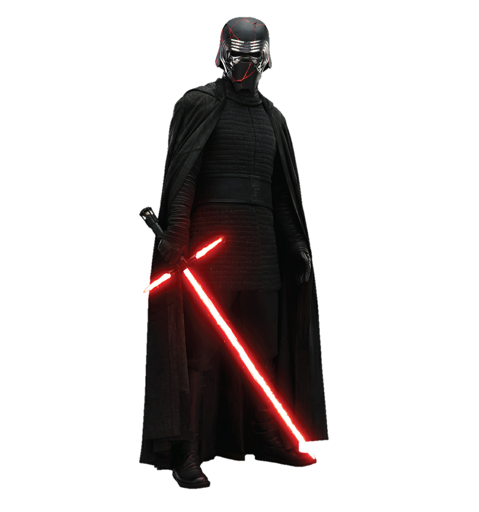

Kylo Ren, originalmente chamado Ben Solo, é o principal antagonista da trilogia de sequências de Star Wars.
F ilho dos heróis da Aliança Rebelde, Leia Organa e Han Solo, e neto de Darth Vader, sua trajetória é marcada por um conflito interno brutal entre a luz e as trevas.